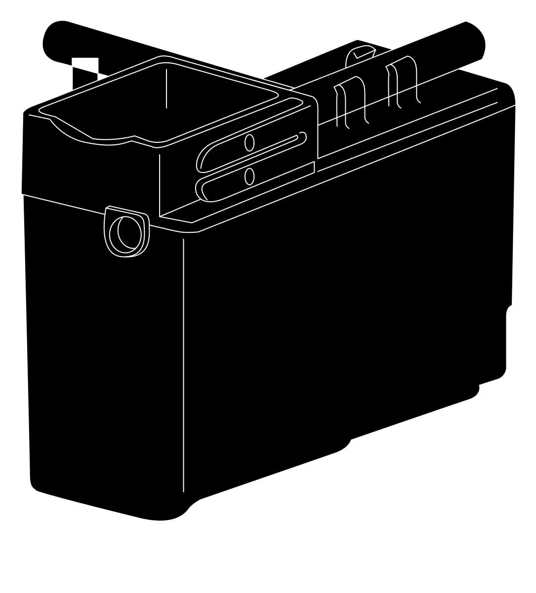

ESSENCE® Espresso/Cappuccino Machine
ESSENCE® Espresso/Cappuccino Machine
- Raise the Brew Handle. Pull gently on the front lower lip of a Pod Holder to remove it from the Espresso/Cappuccino Machine. Remove and discard any used espresso pod. The left and right Pod Holders function the same, and they are interchangeable.
- Water or a cleaning solution can be poured into the Froth Module HERE for the RINSE process.
- Squeeze the tabs on the right side of the Froth Module to release the latch and slide the Froth Module out of the Espresso/Cappuccino Machine.
COMPONENT REMOVAL AND DISASSEMBLY
POD HOLDER AND FROTH
MODULE REMOVAL
MODULE REMOVAL
POD HOLDER
A
FROTH MODULE
A
B
